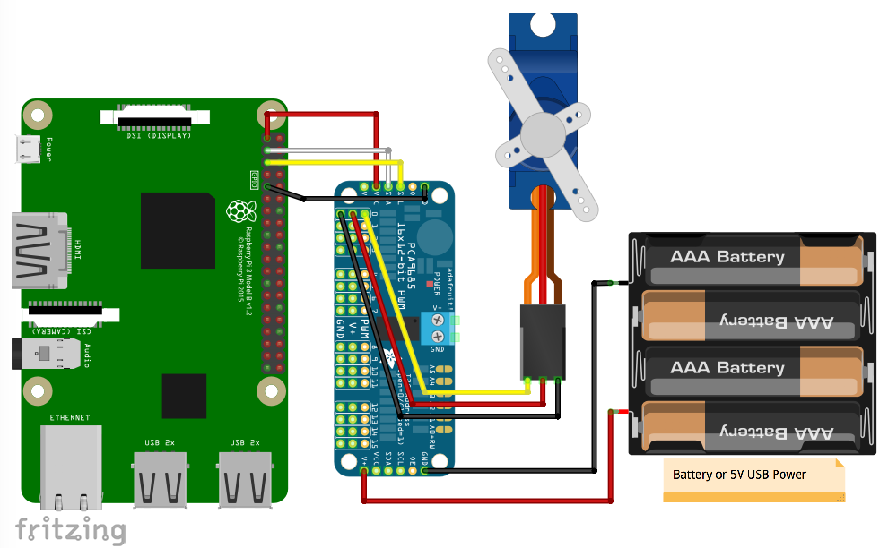

pca9685
PCA9685 16 チャンネルサーボモーター PWM ドライバー
概要
I2C 接続の PWM ドライバー経由でサーボモーターを駆動します。（Raspberry Pi から PWM ドライバーを I2C 接続し、 PWM ドライバとサーボモータ、外部電源を接続します。詳細は回路図を参照ください）
使用パーツ
- PCA9685 搭載 16 チャネル PWM/サーボ ドライバー (I2C 接続) x 1 互換品もあり
- マイクロサーボ SG-90 x 1
- ジャンパー（メス・メス）ケーブル x 4
上記に加え、外部電源確保のため下記 1. あるいは 2. が必要になります。
- 電池 BOX(4 本用) x 1 (※電池 BOX を利用する場合、PCA9685 サーボドライバとの接続用に電池 BOX 側の電源ケーブルの終端をメスに加工する等の工夫が必要です)
- 「電源用マイクロ USB コネクタ DIP 化キット x 1」+「ブレッドボード x 1」「USB Micro B 端子-標準 A 端子のケーブル x 1」+「スマホ用 5V 充電器 x 1」+ 「ジャンパー（メス・オス）ケーブル x 2」
配線図

サンプルコード (main.js)
const { requestI2CAccess } = require('node-web-i2c');
const PCA9685 = require('@chirimen/pca9685');
const { promisify } = require('util');
const sleep = promisify(setTimeout);
main();
async function main() {
const i2cAccess = await requestI2CAccess();
const port = i2cAccess.ports.get(1);
const pca9685 = new PCA9685(port, 0x40);
// servo setting for sg90
// Servo PWM pulse: min=0.0011[sec], max=0.0019[sec] angle=+-60[deg]
await pca9685.init(0.001, 0.002, 30);
for (;;) {
await pca9685.setServo(0, -30);
console.log('-30 deg');
await sleep(1000);
await pca9685.setServo(0, 30);
console.log('30 deg');
await sleep(1000);
}
}